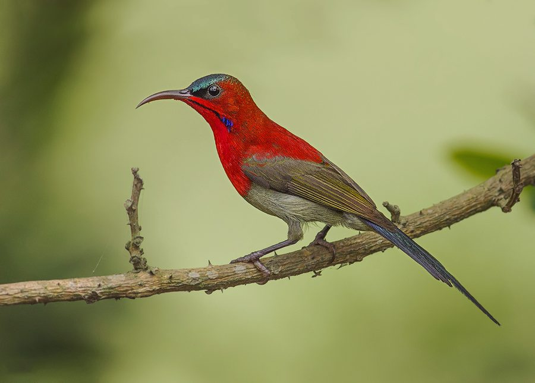

क्रिमसन सनबर्डCrimson Sunbird
Aethopyga siparaja · Nectariniidae · BRD-0321

- Scientific name वैज्ञानिक नाम
- Aethopyga siparaja (Raffles, 1822)
- Family कुल
- Nectariniidae
- Hindi हिंदी
- क्रिमसन सनबर्ड
- Local names स्थानीय नाम
- crimson sunbird
- Status here यहाँ की स्थिति
- native
- Movement आवागमन
- Resident, here all year
- Known from कहाँ दर्ज
- Others have published records from the wider Awadh–Purvanchal plain, none yet from Basti–Ayodhya अवध–पूर्वांचल से दूसरों के प्रकाशित अभिलेख, बस्ती–अयोध्या से अभी नहीं
- IUCN IUCN
- LC
- Review समीक्षा
- not yet reviewed
When to look कब देखें
Present all year. साल भर मौजूद।
Tell it apart from इनसे अलग पहचानें
क्रिमसन सनबर्ड / Crimson Sunbird
Aethopyga siparaja (Raffles, 1822) — Nectariniidae
क्रिमसन सनबर्ड — तराई और साल के जंगलों का एक अत्यंत नन्हा, चंचल और चमकीला पक्षी है, जिसे भारत के सबसे खूबसूरत शकरखोरों (सनबर्ड) में गिना जाता है। वयस्क नर पक्षी का सिर, गर्दन, पीठ और सीना गहरा चमकदार किरमिजी-लाल (क्रिमसन) होता है, माथे पर धात्विक नीली-हरी चमक होती है, और कमर पर एक बेहद चमकदार सुनहरी-पीली पट्टी चमकती है। इसकी पूंछ के मध्य पंख लंबे और गहरे नीले-हरे होते हैं। यह फुर्ती से उड़कर फूलों के सामने हवा में मंडराते हुए अपनी पतली घुमावदार चोंच से मकरंद चूसता है।
Quick Identification त्वरित पहचान
| Feature | Description |
|---|---|
| Habit | Tiny, energetic nectarivorous bird flitting rapidly among flowering trees |
| Male Upperparts | Brilliant crimson mantle and back; forehead metallic dark green; yellow rump |
| Male Underparts | Fiery crimson chin, throat, and breast; lower belly and vent dark greyish-olive |
| Female Plumage | Drab olive-green upperparts; pale yellowish-green underparts; short tail |
| Bill | Slender, sharp, distinctly decurved; dark brown to blackish |
| Tail | Male has elongated central tail feathers glossed metallic green; female tail short |
| Flight Pattern | Very swift, direct, whirring flight between flowering shrubs and canopy lianas |
Field tip: Watch flowering shrubs, mistletoes, and canopy blossoms at the forest edge. The male's glowing crimson head and breast, bright golden-yellow rump, metallic forehead, and elongated green tail streamers separate it from all other regional sunbirds.
हिंदी:
नर पक्षी का सिर, सीना और पीठ गहरा लाल होता है और कमर पर चमकदार पीली पट्टी होती है।
मादा हल्के जैतून-हरे रंग की होती है और उसकी पूंछ छोटी होती है।
यह फूलों के सामने हवा में रुककर अपनी मुड़ी हुई पतली चोंच से रस चूसता है।
Morphology आकारिकी
Measurements as given by Baker (1926 as Aethopyga siparaja):
| Measurement | Range |
|---|---|
| Wing | 52–59 mm (Baker 1926) |
The Crimson Sunbird is a tiny nectar-feeding passerine displaying extreme sexual dimorphism. In adult males, the forehead, anterior crown, and narrow moustachial streaks running down from the gape are iridescent metallic green or violet-blue.
The sides of the head, nape, mantle, scapulars, throat, and breast are rich glowing crimson-red. Across the lower back runs a contrasting band of bright sulphur-yellow. The lower breast, abdomen, and flanks are dull olive-grey or smoky olive-yellow.
The tail feathers are blackish, with the central pair considerably elongated and glossed with brilliant metallic green.
Adult females are entirely devoid of crimson and metallic hues: the upper plumage is uniform dull olive-green, and the underparts are paler yellowish-olive.
The bill is long, thin, and gracefully arched downward, dark brown with a paler pinkish-horn base to the lower jaw. The iris is dark hazel-brown. The legs and feet are dark horny-brown.
Vocalisations. A sharp, metallic, squeaky flight call rendered as chip-chip-chip or tzit-tzit, repeated rapidly as the bird darts between blossoms.
हिंदी:
इसके पंखों की लंबाई 52 से 59 मिमी होती है।
इसकी पतली घुमावदार चोंच फूलों की गहराई से रस निकालने के लिए पूरी तरह अनुकूलित है।
यह उड़ते समय तेज और तीखी 'चिप-चिप' की आवाज निकालता है।
Behaviour & Ecology व्यवहार और पारिस्थितिकी
Aethopyga siparaja is a restless, active bird that frequents forest margins, overgrown ravines, and canopy vine tangles where nectariferous plants bloom. It flits rapidly from flower to flower, perching lightly on petioles or hovering briefly in front of floral tubes while inserting its decurved bill.
Males are fiercely territorial around rich nectar patches, perching on exposed twigs with plumage puffed out to utter rapid chipping songs and chasing away competing sunbirds, white-eyes, and flowerpeckers.
हिंदी:
यह बहुत चंचल होता है और एक फूल से दूसरे फूल पर लगातार तेजी से फुदकता रहता है।
नर पक्षी फूलों के समृद्ध स्रोत के आसपास अपना इलाका बनाकर अन्य पक्षियों को खदेड़ता है।
Life Cycle / Phenology जीवन चक्र
Baker (1926, p. 379–380) records that breeding occurs during May, June, and July in the plains and foothills of the Himalayas. The female builds a delicate, pear-shaped or oval pouch nest suspended from the tip of a slender drooping branch, bush, or hanging creeper. The nest is woven from fine grass, plant down, moss, and bark flakes bound with cobwebs, holding a small clutch of pale speckled eggs.
हिंदी:
बेकर (1926) के अनुसार हिमालय की तलहटी और तराई में इसका प्रजनन काल मई, जून और जुलाई में होता है। मादा लटकती हुई टहनियों या झाड़ियों पर रेशों, काई और मकड़ी के जालों से छोटा लटकता घोंसला बनाती है।
Host Plants or Prey आहार
The Crimson Sunbird is primarily nectarivorous but relies heavily on small soft-bodied invertebrates for protein, particularly when feeding young:
- Nectar from forest trees (Bombax ceiba, Butea monosperma, and Woodfordia fruticosa)
- Nectar from epiphytic parasitic mistletoes (Loranthus and Dendrophthoe species)
- Nectar from wild tubular blossoms
- Spiders, aphids, and scale insects gleaned from under leaves
- Tiny midges and flies captured during brief aerial flutter-pursuits
Through its flower-visiting foraging behaviour, the species visits native blossoms and mistletoes across forest belts.
हिंदी:
यह सेमल, पलाश, धवई और बांदा (मिसलटोज़) के फूलों का मकरंद चूसता है।
यह पत्तियों के बीच से बारीक मकड़ियां, एफिड्स और छोटे कीड़े भी चुन-चुनकर खाता है।
Predators / Natural Enemies शत्रु
Hawks, owls, and small arboreal predators take birds of this size or raid pendant nests. No source opened for this atlas names a specific predator of this species.
हिंदी:
शिकारी बाज, उल्लू और पेड़ों पर रहने वाले छोटे शिकारी इस आकार के पक्षियों का शिकार करते हैं या लटकते घोंसलों पर हमला करते हैं। इस एटलस के लिए देखे गए किसी स्रोत में इसके किसी विशिष्ट शिकारी का नाम दर्ज नहीं है।
Agricultural / Human Relevance कृषि प्रासंगिकता
The Crimson Sunbird feeds on flower nectar, small spiders, and tiny insects gleaned from flowers and the undersides of leaves (Baker 1926, p. 380). It is protected under the Wildlife (Protection) Act, 1972.
हिंदी:
क्रिमसन सनबर्ड फूलों का मकरंद, छोटी मकड़ियों और पत्तियों के नीचे से बारीक कीड़ों को खाता है (बेकर 1926)। यह वन्यजीव (संरक्षण) अधिनियम, 1972 के तहत संरक्षित है।
Expected Locally स्थानीय रूप से अपेक्षित
Not a field record. Written from published accounts for eastern Uttar Pradesh. No confirmed local sighting yet — if you have seen it, that is what the atlas needs.
अभी तक स्थानीय पुष्टि नहीं। यह विवरण प्रकाशित स्रोतों से है, किसी अवलोकन से नहीं।
Look along flowering shrubs, moist forest edges, and mistletoe clumps in sal forest tracts in the northern Terai.
GBIF holds published records from the wider Awadh–Purvanchal plain, none yet from Basti–Ayodhya.
A first record would be a photograph of the bird with place and date, sent through the About page.
Distribution वितरण
Global range: Widespread across the Oriental region, from northern India and Nepal eastwards through southern China, Southeast Asia, and Indonesia to the Philippines.
Regional status: Resident in moist deciduous forest tracts and wooded foothills of northern Uttar Pradesh, including Dudhwa, Katarniaghat, and Sohelwa.
हिंदी:
यह भारत, नेपाल, भूटान, चीन और दक्षिण-पूर्व एशिया के वनों में पाया जाने वाला स्थायी पक्षी है।
Research Questions शोध प्रश्न
- Which native plant species serve as critical nectar reservoirs for Aethopyga siparaja during the dry pre-monsoon heat? / गर्मी के सूखे मौसम में क्रिमसन सनबर्ड मकरंद के लिए मुख्य रूप से किन जंगली पौधों पर निर्भर रहता है?
- What floral traits determine flower choice and visitation rates between Crimson Sunbirds and sympatric Purple Sunbirds? / क्रिमसन सनबर्ड और पर्पल सनबर्ड के बीच फूलों के चुनाव में क्या अंतर होता है?
- What is the pollination efficiency of Aethopyga siparaja on parasitic Dendrophthoe mistletoes infesting forest trees?
- How do changes in forest understory structure affect spider web availability for sunbird nest construction?
- Can garden bird surveys document seasonal altitudinal movements between the Himalayan foothills and Terai plains? (Photographs of visiting males at flowering garden plants help map seasonal shifts.)
Similar Species मिलती-जुलती प्रजातियाँ
| Species | How to tell apart | हिंदी | |
|---|---|---|---|
| [[purple_sunbird\ | Purple Sunbird]] (Cinnyris asiaticus) | Breeding male is entirely glossy metallic dark purple-black without red; female has pale yellow underparts | शकरखोरा |
| [[pale_billed_flowerpecker\ | Pale-billed Flowerpecker]] (Dicaeum erythrorhynchos) | Extremely small, plain olive-grey bird with short pink curved bill; lacks red or yellow colours; short tail | फूलसुंघी |
Field rule: The glowing crimson upperparts and breast, bright golden-yellow rump, metallic crown, and elongated central tail feathers distinguish the male Crimson Sunbird from all other sunbirds in northern India.
हिंदी:
पर्पल सनबर्ड पूरा गहरा बैंगनी-काला होता है और उसमें कोई लाल रंग नहीं होता; फूलसुंघी सादी भूरे रंग की बहुत छोटी चिड़िया होती है।
Taxonomy & Classification वर्गीकरण
Original description. Described by Thomas Stamford Raffles in 1822 in the Transactions of the Linnean Society of London (vol. 13, part 2, p. 299), under the basionym "Certhia siparaja". Formerly treated under Aethopyga siparaja by Baker (1926).
Subspecies. Multiple subspecies are recognized; northern Indian populations belong to Aethopyga siparaja seheriae (Tickell, 1833).
Family and order placement. Order Passeriformes; family Nectariniidae (sunbirds and spiderhunters).
IUCN status rationale. Evaluated as Least Concern (LC) by the IUCN Red List due to an extremely wide geographical range and stable populations in suitable forest habitats.
हिंदी:
रैफल्स ने 1822 में इसका वर्णन किया था। यह नेक्टारिनिइडे कुल का सदस्य है और वैश्विक स्तर पर सुरक्षित माना जाता है।
Photo Gallery फोटो गैलरी
No photos yet — add field photos to media/species/crimson_sunbird/ and run node scripts/sync_photos.js.
Photos needed आवश्यक फोटो
- [ ] Adult male hovering at forest flower showing crimson mantle (फूल के सामने मंडराता लाल नर पक्षी)
- [ ] Female perched among flowering mistletoe (बांदा के फूलों पर बैठी जैतूनी मादा)
References संदर्भ
- Raffles, T. S. (1822). Transactions of the Linnean Society of London, vol. 13, part 2. Linnean Society, London, p. 299 (as "Certhia siparaja").
- Baker, E. C. S. (1926). The Fauna of British India, Including Ceylon and Burma. Birds. Vol. 3. Taylor & Francis, London, p. 378 (as Aethopyga siparaja).
- Ali, S. & Ripley, S. D. (1987). Compact Handbook of the Birds of India and Pakistan. Oxford University Press, New Delhi.
- Grimmett, R., Inskipp, C. & Inskipp, T. (2011). Birds of the Indian Subcontinent. 2nd ed. Christopher Helm, London.
- BirdLife International (2024). Aethopyga siparaja. The IUCN Red List of Threatened Species 2024: e.T103798985A264426541.
- GBIF Occurrence Data — Aethopyga siparaja (Raffles, 1822), India (2025).
Source file: species/fauna/birds/crimson_sunbird.md